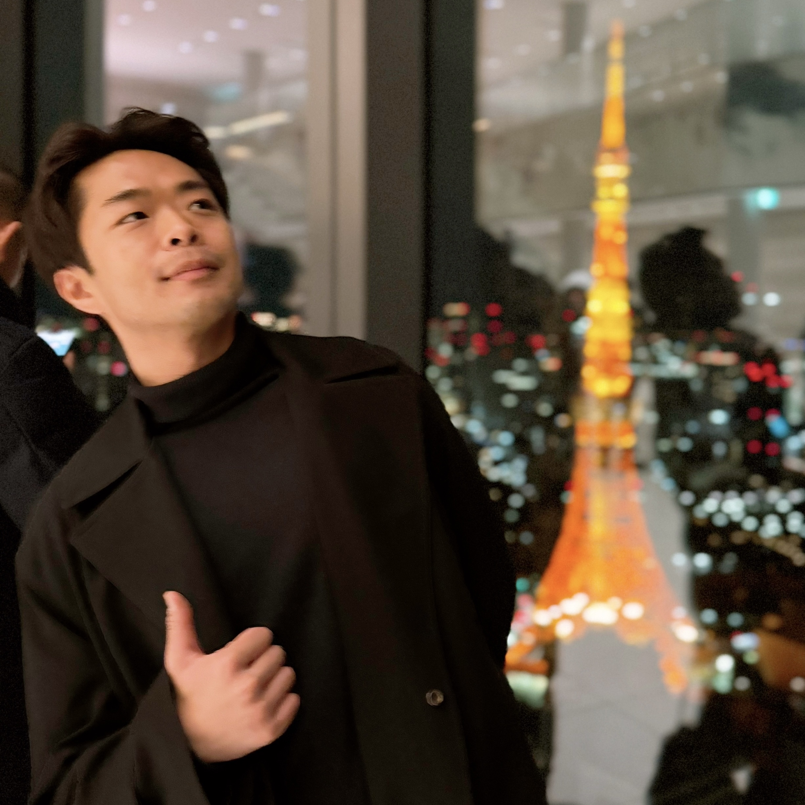

Dr. Jihwan Kim
Scientist in Physical Oceanography and Fisheries
Data & Fisheries Science Advisor at the North Pacific Fisheries Commission
Advancing sustainable fisheries through innovative data science and oceanographic research
Education & Research Interests
Education
-
Ph.D. in Physical Oceanography
Seoul National University (2019–2023)
Graduated as the youngest and fastest to complete the Ph.D. in Korea. -
B.S. in Earth Science Education
Seoul National University (2013–2018)
Including Compulsory Military Service (2015–2016).
Research Interests
- Pelagic fisheries & upper-ocean current systems in the Northwestern Pacific
- Statistical forecasting methods for fisheries and environmental data
- Machine learning applications for sustainable fishing, including super-resolution and forecasting future fishing grounds
Experience
Ocean Engineer, Sustainable Fisheries Management Team
Collecte Localisation Satellites (CLS) – France & Japan (2025– )
- Directed oceanographic analysis to optimize tuna fishing vessel operations, ensuring compliance with safety regulations and sustainable practices.
- Utilized real-time ocean data and predictive modeling to monitor vessel performance and enhance operational efficiency.
- Played a key role in designing and implementing the CATSAT system—a satellite-based fisheries monitoring solution.
Data & Fisheries Science Advisor
North Pacific Fisheries Commission (2024– )
- Resource Management - Pacific Saury:
- Delivered presentations and prepared publications on the spatial-temporal variability in catch per unit effort of Pacific saury (Cololabis saira).
- Developed and presented “Physically Consistent Super-Resolution of Pacific Saury Spatio-Temporal Distribution Using Multi-head Attention U-Net.”
- Resource Management - Chub Mackerel:
- Investigated the effects of Kuroshio Current variability and the Pacific Decadal Oscillation on the decline of Chub Mackerel (Scomber japonicus) catches.
- GIS & Data Integration: Developed a GIS-based mapping system to analyze Neon Flying Squid catch and effort data from commission members.
- Compliance Analytics & Reporting:
- Designed matching algorithms integrating VMS data, transshipment documents, and high seas boarding reports to detect non-compliance.
- Produced comprehensive reports and compiled fisheries inventories for FAO’s monitoring system.
Postdoctoral Fellowship
North Pacific Fisheries Commission & Tokyo University of Marine Science and Technology (2023–2024)
- Resource Management - Pacific Saury: Prepared a presentation and publication on the interannual to decadal relationship between Pacific saury catch variability and basin-scale ocean conditions.
- Resource Management - Chub Mackerel: Prepared work on catch and population variability in relation to ocean environmental changes.
- Catch Reporting Measures: Developed strategies to improve the accuracy of fisheries catch reporting.
- GIS-Based Mapping: Designed a mapping system for Neon Flying Squid catch and effort data.
- IUU Fishing Measures: Created algorithms to detect illegal fishing by integrating VMS and air surveillance data.
Teaching Experiences
-
Teaching Assistant, Seoul National University
Courses: Physical Oceanography (Spring 2019), Observation and Comprehension of Natural Disasters (Fall 2019, Spring 2020), Theory and Practice in Computational Sciences 1 (Spring 2022) -
Lecturer, Seoul National University
Course: Computational Science: Subject Research (The Missing Semester of CS Education) (Spring 2021) -
High School Science Teacher
Earth Science Teacher at Sehwa High School (2018–2019)
Publications & Presentations
A selection of key publications and presentations is listed below. For a comprehensive list, please refer to the downloadable CV.
- Kim, J. & Na, H. (2022). Interannual Variability of Yellowfin Tuna and Bigeye Tuna Catches in the Southwestern Tropical Indian Ocean. Frontiers in Marine Science, 9, 857405.
- Kim, J., Na, H., Park, Y. G., & Kim, Y. H. (2020). Potential Predictability of Skipjack Tuna Catches in the Western Central Pacific. Scientific Reports, 10, 3193.
Co-workers

Dr. Hanna Na
Professor, Seoul National University
Dr. Robert Day
Executive Secretary, NPFC
Ms. Judy Dwyer
Compliance Manager, NPFC
Dr. Aleksandr Zavolokin
Science Manager, NPFC